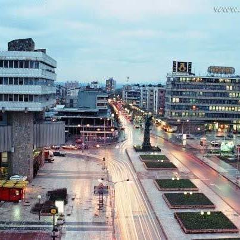

Kruševac-Istorija
Dobro došli na sajt posvećen gradu Kruševcu

Knez Lazar je 1371. godine podigao grad Kruševac kao svoju prestonicu.
Kruševac je dobio ime po kamenu krušcu. Kako predanje kaže, to je rečni
kamen oblog oblika, od koga je grad većim delom i sazidan.
Grad 1454. godine pada pod tursku vlast i u to vreme dobija tursko ime
Aladža Hisar, što znači Šareni grad. Konačno je oslobođen od Turaka
1833. godine. Posle oslobođenja, Kruševac postaje jedan od većih
regionalnih centara tadašnje Srbije.
Jedna od značajnijih znamenitosti grada Kruševca je spomen park
Slobodište. Posvećen je rodoljubima koje su na Bagdali streljali
pripadnici nemačkih okupacionih snaga za vreme Drugog svetskog rata.
Ubijeno je 1642 rodoljuba.
U Kruševcu se nalaze ostaci zidina Kule kneza Lazara, poznatije kao Don
Žon kula, koja se nalazi u porti crkve Lazarice. U porti se takođe
nalazi i Narodni muzej.
U centru grada nalazi se Trg kosovskih
junaka i u njemu Spomenik kosovskim junacima. U blizini Trga nalazi se
park Kosturnica. U njemu se nalazi spomenik koji simboliše srpsko –
grčko prijateljstvo.
Manje poznate činjenice o Kruševcu su :
U Kruševcu su nekada postojale četiri apoteke i sve su nosile imena
svetaca. Kruševac je jedini grad koji ima pravo na korišćenje grba
Hrebeljanovića kao zvaničnog grba grada. Glavna kruševačka ulica nosila
je naziv Knez Mihailova ulica. Današnji stanovnici Kruševca poznatiji su
pod imenom Čarapani. Predanje kaže da su taj naziv dobili zahvaljujući
Kruševljanima koji su tokom Prvog srpskog ustanka, hodajući polako u
čarapama, u noći uoči same bitke, polako prišli turskim šatorima i
ubijali Turke iz zasede.
Sam grad je iznedrio mnogobrojne poznate i uvažene ličnosti. Neke od njih
su : Miodrag Petrović Čkalja, Radmila Savićević, Vlastimir Đuza
Stoiljković, Radmila Živković, Vojin Ćetković, Taško Načić, Stanislav
Binički...